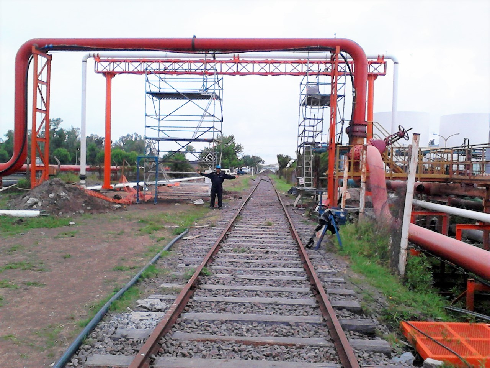
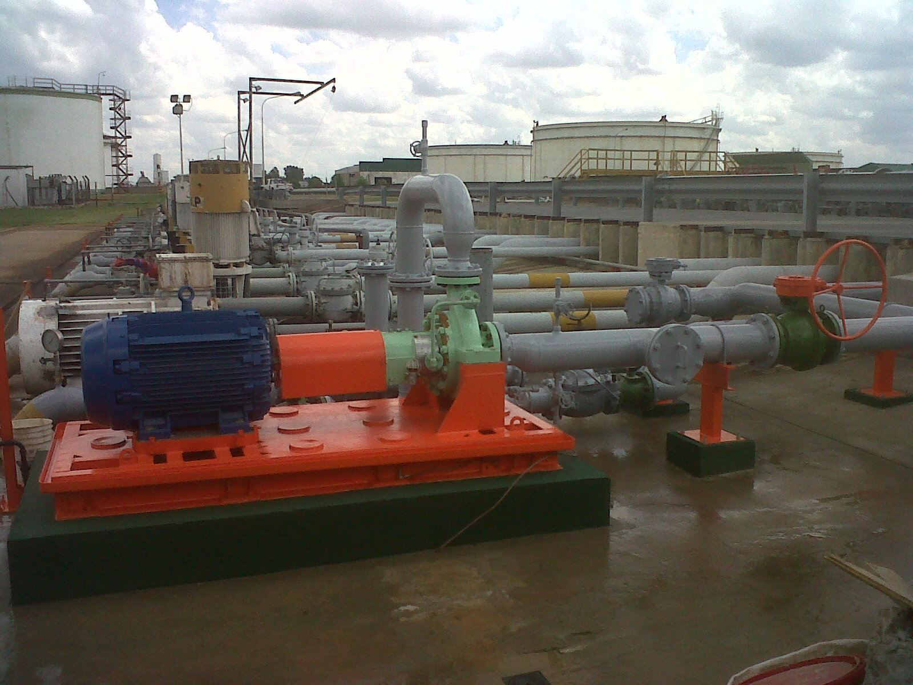
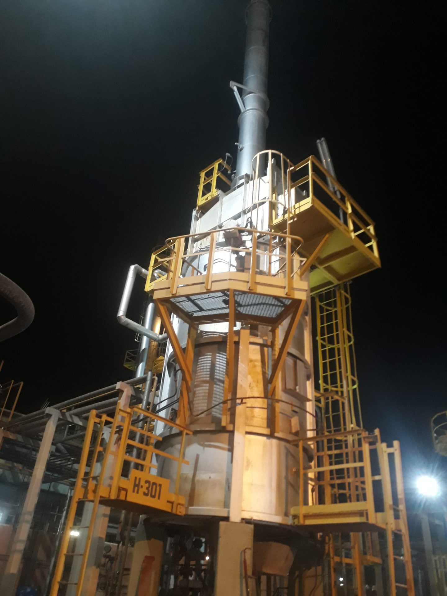
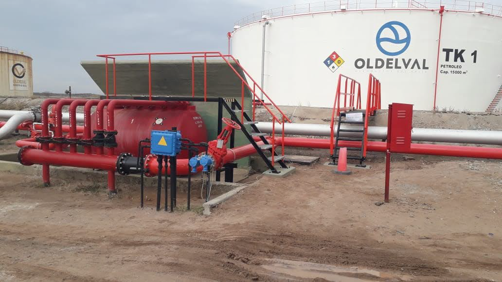

PARADA DE PLANTA PLATFORMING / HTNC
Prefabricación y montaje de soportes, cañerías, electricidad e instrumentos. Tareas en varias MP dentro del sector.

Prefabricación y montaje de soportes, cañerías, electricidad e instrumentos. Tareas en varias MP dentro del sector.
Inspección integral, reparaciones, soldaduras con RX/TT, aislación, refractario, cambio de quemadores, END, estanquidad y documentación.

Montaje de soportes y líneas IFO 380, pórticos para cruces y pasarelas; adecuación de línea existente.

Tareas de urgencia en paro: desmontajes por incendio, soportes/bandejas nuevas y renovación del sistema eléctrico de subestación.

Ingeniería y ampliación del descargadero: piping, estructura, civil, E&I, sistemas contra incendio, pruebas y puesta en marcha.

Localización de falla, excavación, parche, END, clock spring, nuevo revestimiento, tapada y documentación de calidad.

Ingeniería y ejecución: estructura y cubierta nuevas, canaletas, chapas, barreras, arenado/pintura, puesta en marcha y calidad.

Piping, soportes, civil, E&I, columna Eaton Holec con soft starter ABB, sensores, pruebas y puesta en marcha.

Desmontaje/montaje de cañerías y válvulas, corrección de estructuras, arenado/pintura, pruebas hidráulicas y documentación.

Nueva sala de bombas de incendio, bombas principales/jockey, PLC, línea 24”, alimentación eléctrica, pruebas y puesta en marcha.
.png)
Prefabricado/montaje de cañerías y soportes, aislación térmica, instrumentación, cableado, pruebas hidráulicas y END.

Refuerzo e ignifugado de estructuras, montaje con grúa 400 t, aislación, instrumentación, iluminación APE, pruebas y calidad.

Reparación y adecuación en taller, replanteo de conexiones, arenado/pintura y traslado a CILP.

Red contra incendio para refrigeración de recipientes: anillos, diluvio, cañerías troncales, APE, central inteligente, pruebas y capacitación.

Construcción de plataforma flotante y planchada: módulos, tanques de flotación, soldaduras, traslado y botadura.

Desguace y desmontaje total, soportes multinivel, bandejas inox para cableado, interconexiones y prueba hidráulica.

Soportes nuevos y bases H°A°, ignifugado, limpieza de rociadores y pintura de red existente (2010).

Relevamiento e ingeniería; cámara H°A°, soportes/bases, nueva línea Ø10” soterrada y tapas; arenado/pintura.
